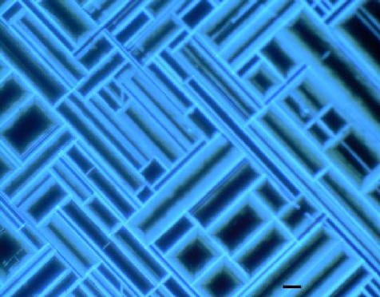
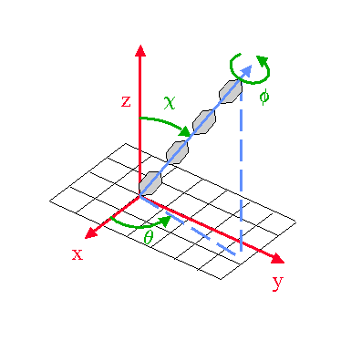
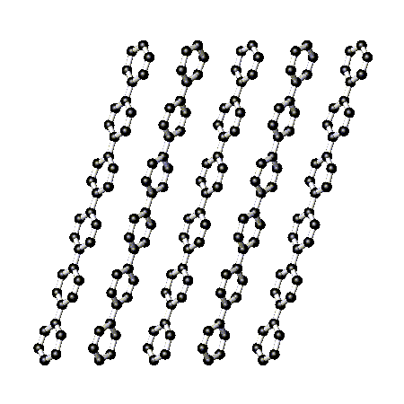

Detlef Smilgies

1. Fluorescence micrograph of a POPOP film grown on a KCL(001) substrate
(see POPOP).

2. The degrees of freedom of a simple rod-like molecule on a surface:
rotation about the molecular axis f, tilt
of the molecular axis c, azimuth of tilt q
as well as the adsorption site x, y, z on the surface
(shown schematically as a grid)

3. Sideview of a para-sexiphenyl layer grown in the standing configuration
on KCl(001).
The molecules feature 3D growth of plate-like (standing molecules)
or needle-like (lying molecules) crystallites of the bulk structure.